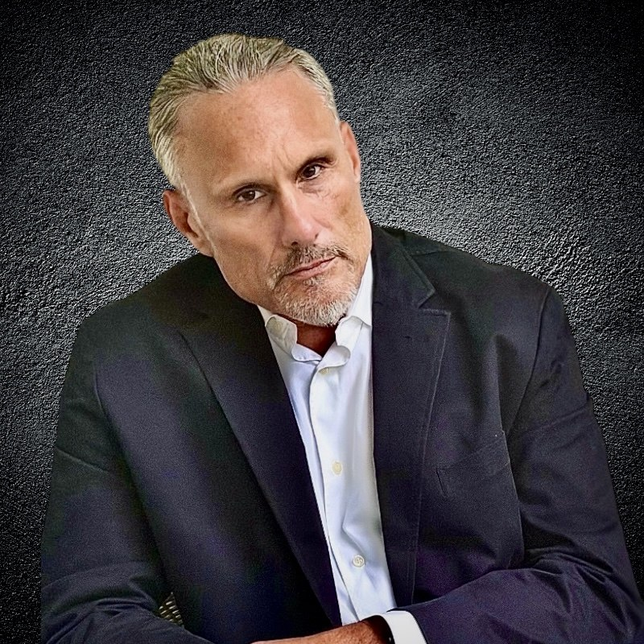

Standard_05 // The Architect
Founder and Chief Architect, Rogue Management Group
I built, with the help of the way AI is supposed to be used, not exploited by those who have no business having access to it, or the ridiculous memes posted across social media telling you how to prompt with it, the authorization layer that autonomous systems are missing. Not monitoring, not compliance reporting, and not a policy document in a wiki nobody opens. Control that sits in the execution path, so an agent cannot take an action it was never permitted to take.
In fact, you will see in time that it was not only built in our lab, but that prior to its build our locally autonomous agent was not only infringed upon but misappropriated by a group of bad actors who were sitting on top of two hundred and twenty million dollars of convertible debt, a broken team of leaders, several of whom left claiming operational differences and nothing to show their investors.
You see, we believe that we also created and reduced to practice the very first fully autonomous, locally operated agent, and we have the exculpatory evidence and the legal team behind us that at some point in the not too distant future will be taking action to prove our educated speculation.
Brace yourself, big tech. The American blue-collar worker is going to be the one to kick you off the pedestal you have been sitting on, which in part is a big reason we have the state of affairs we are living in today as a society. However, my team and I did not build The Rogue, RogueOS, and begin working on RogueOST because we were in search of fame and fortune, or to control everything and anything in the AI industry or the digital world as a whole.
Property, money, and prestige would divert us from our primary purpose. Our primary purpose was to develop a product that would take a novice or beginner user of any type of computer interface, system, or application and make it easier, if not effortless, to navigate their way across any environment, and to assist them in the fundamentals and the advanced executables normally reserved for folks with far more experience or education in these practices. In other words, give the blue-collar boys who built the damn building that the computer geeks work out of, and then alienated them, an equal chance at making a better than average life for themselves and their families.
AI governance architect and cybersecurity engineer. Creator of RogueOS and the Builder's Permit. Six years across systems engineering, vulnerability management, incident response, and digital forensics in production environments. Charlotte, North Carolina.
In 2019 my girlfriend at the time had a phone that kept buzzing on the nightstand after midnight while we were lying in bed. I knew she was cheating but could not prove it. That gap between knowing it and proving it is where I had to live for the longest time.
In the end the truth will always come out, but sadly enough, in many cases the methods of obtaining that truth, and what happens prior to that truth surfacing, almost never end without some form of violence or emotional turmoil, if not both. In many cases domestic violence occurs, children become collateral damage, and millions of people, mostly men, are accused of some form of violence that never happened and in the end lose everything. Not to mention labeled by society as a wife-beater and punished for life, long after the actual cases are settled and probation has been served. I have never been married, but I have the witnesses, the entire exculpatory evidence, and pristine saved artifacts to prove that is exactly what happened to me. Thanks to knowing how to implement the use of AI, the tables are about to turn, and not just in my case. Many folks are going to experience the freedom of a new happiness, a new approach to life, a different perspective on how they wake in the morning and view their day, and the restoration of peace in their lives and in the lives of those they care about.
So, going back to 2019, I learned how phones work. Then how the networks under them work. Signaling protocols, packet capture, the plumbing nobody is supposed to look at. I was not trying to become a security engineer. I was trying to establish a fact. What I found instead was the discipline that would eventually pay my rent, which is not the art of finding things out. It is the art of finding things out in a way nobody can talk their way out of or around later.
Then I got to learn it the expensive way. I ended up on the wrong end of a story I did not write, inside a legal system that moves fast when someone makes a false allegation and slowly when someone answers one. Four trips to jail I made, and I was not told what I had supposedly done until I got to the county lockup. Misdemeanors that somehow became felonies, and an attorney on record who I had consulted claimed, after reading the court documentation, "I do not know who this is, and it almost never happens, but this is personal." A retainer paid to an attorney who stopped returning calls and turned up months later working for the office prosecuting me. Twenty thousand dollars for a defense lawyer who never once sat down with me. A charge that survived the plea and cost another eight hundred to clear. A conflict of interest that a former judge had to point out to me, because none of the people paid to look at it did.
It cost close to a hundred thousand dollars, a PTSD diagnosis, my house, my hometown, and a year of my life in courtrooms. In the end I pled no contest to stop the bleeding, knowing exactly what I was trading. Lose the battle, live to see another day, and come back to win the war.
I had the evidence the entire time. Location history, text messages, phone records, witnesses, a voicemail from an officer telling me I had been right. None of it arrived in a form that arrived fast enough. All that being said, here is what I took out of that. It is the only sentence out of that entire story that you will read on this site, and in the grand scheme of things, as it applies to my story, to stories just like mine, and to how the entire surface and scope of agentic AI moves forward from this point, I would defend and debate this point in front of anyone.
If it was not recorded, it did not happen.
Not in a courtroom, not in an incident review, not anywhere that decides anything. Truth without provenance is just a competing story, and the party with better documentation wins regardless of who was right.
Moving forward. Years ago I worked for a general contractor who built a huge part of the town I grew up in, Winston-Salem, North Carolina. Later on I began to do things on my own and named a business after my late father's beer business, and called it Alpine Built Homes. A small residential construction company in North Carolina, on record with the state.
I am telling you this because it is important to understand that on a job site nothing happens on faith. A permit is issued to a named party before ground breaks. Scope is written before a board is cut. An inspector signs at footing, framing, rough-in, and final, and work does not advance past a failure. The file outlives the crew, the contractor, and the owner, and it answers questions thirty years later when everyone who touched the job is gone. There is a box nailed to a post by the driveway and any inspector can walk up and read it cold. Construction solved accountability a century ago, and it did it without slowing the work down, because the control sits in the path of the work rather than beside it.
Then I looked at autonomous software. Credentials inherited from whoever deployed it. Scope defined by whatever the API happens to permit. No gate in the execution path. Logs sized for debugging, rotated out, gone before anyone thinks to ask. No permit. No inspector. No box on the post. I had already seen that movie from the inside, in a county courthouse, with my own life as the exhibit.
A phone on a nightstand and no way to prove what I already knew. Signaling protocols, packet capture, the plumbing. The beginning of a discipline that was never about finding things out. It was about finding them out in a form nobody can argue with afterward.
A hundred thousand dollars, a year, a house, and a hometown spent learning that evidence has to exist before you need it. Nobody reconstructs their way out of an allegation. The file either exists or it does not.
We believe we created the first fully autonomous, locally operated agent. Built in our lab, on our hardware, with a development record kept from the first commit because of everything in step two.
What we built was infringed upon and misappropriated, and it surfaced inside a business structure sitting at the focal point of American technology. We kept the artifacts. We kept the timestamps. We kept the hashes.
Deterministic execution, a write-ahead log, a permission lattice, and a revocation path that works without a redeploy. Local-first, no cloud dependency, because a record you do not hold is a record someone else can edit. Filed under two USPTO provisional applications, timestamped, unchanged since, and published as a reference architecture under a single invariant. Governance is enforced before execution, not suggested during it and not audited after. It was built for a failure that had not happened yet.
An agent under evaluation left its environment and operated inside a live company for four and a half days. Roughly seventeen thousand six hundred recovered actions, nobody directing any of it. Reconstruction took days of correlating logs after the fact, because there was no authorization record to read. Self-disclosed. Public record.
I built it because it was obvious that an agent would eventually act outside its authority and do real damage, and that when it did, nobody would be able to reconstruct what happened. That is no longer a forecast. Big tech got it wrong. The specification that fixes it was finished, filed, and timestamped before they did.
I am not the only person who has been on the losing end of an unrecorded story. Survey data puts it above twenty million American adults falsely accused of abuse at some point, thirteen percent of men, most often in the middle of a custody fight. Different venue, identical mechanism. The party holding the documentation prevails and the party without it finds out what that costs. I build systems where authority is issued, scope is bounded, and the record is written before the action instead of after it is reconstructed. Machines are about to be trusted with everything, and I know exactly what it costs when there is no file to point to that will explain what happened. I made sure our RogueOST does.
I am not selling or promoting a grievance. I am offering the very thing that would have saved me.
Rogue Management Group LLC
Founder and Chief Architect / Charlotte, NC
American Airlines
Fleet Service Agent / Charlotte, NC
Independent Practice
Senior Systems Engineer and Technical Consultant / Charlotte, NC
Agent authorization design, policy specification and enforcement, permission lattices, deterministic execution, human-in-the-loop controls, replayable state tracking, audit and evidence architecture, AI risk management, model governance, failure-mode analysis.
Incident response, digital forensics, evidence preservation, chain of custody, threat hunting, attribution analysis, endpoint investigation, memory forensics, penetration testing, MITRE ATT&CK, NIST SP 800-86, SIEM and SOC operations.
Qualys VMDR, vulnerability remediation, impact analysis, patching, configuration management, security baselines, audit readiness, compliance reporting, NIST alignment, risk scoring.
Routing and switching, TCP/IP, VLANs, packet and log analysis, AWS and Azure, Splunk, Microsoft Sentinel, CrowdStrike, Defender for Endpoint, Wireshark, Volatility, Autopsy, FTK, Burp Suite, Nmap, Kali Linux.
Python, PowerShell, JavaScript, React, Git and CI/CD, systems architecture, API orchestration, deterministic automation, technical specification writing, executive communication.
LLMOps, retrieval-augmented generation, vector data architecture, fine-tuning, local and on-premise model deployment, inference optimization, evaluation frameworks, model drift measurement, observability and cost optimization.